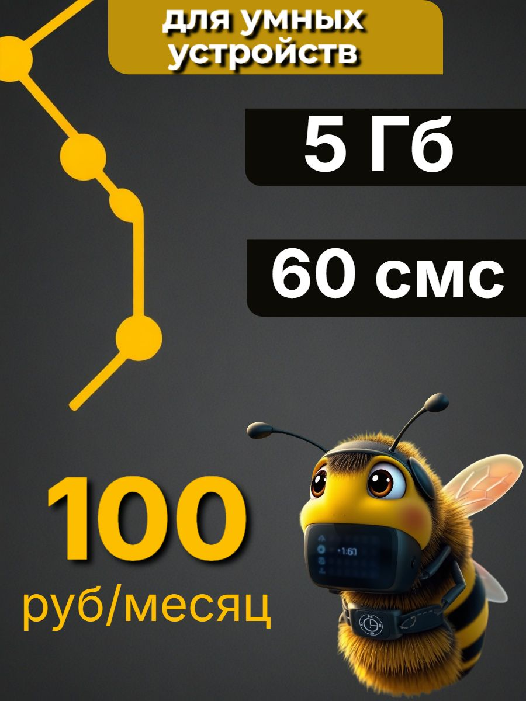
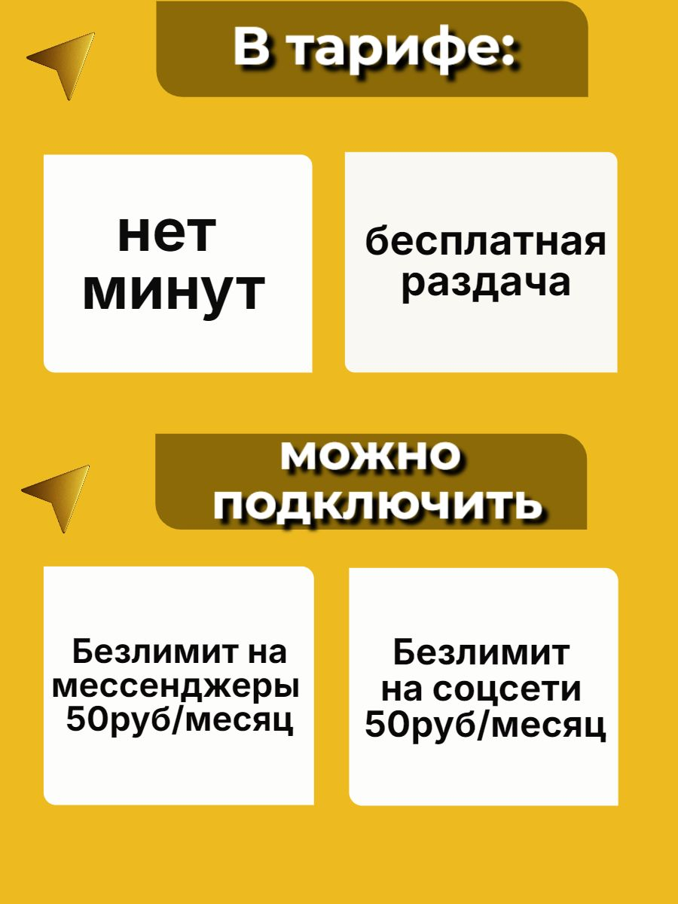
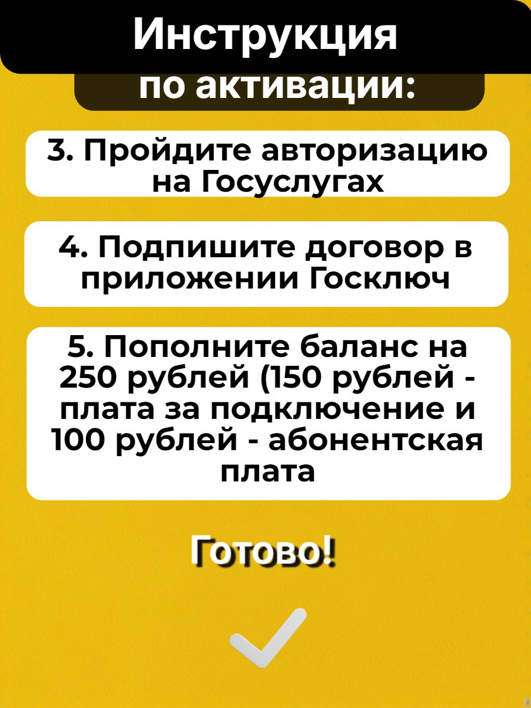

Выбраны соответствие функции устройства, денежные отношения, прагматика обещания, смысловой перенос, композиция, когнитивные операции и конец использования. Их выход — восстановленное предложение, поддержанные прочтения, ранняя структура выбора и исполнимая последовательность. Ранг коммерческого эффекта и межплощадочное сравнение здесь не требуются. Оговорки о текущих условиях относятся размещению, а рабочий экспертный вывод принимается по источникам.
Рассматривается карточка Ozon 3145077393: SIM Билайна с 5 ГБ, 60 SMS и платой 100 рублей в месяц у продавца «Много Сим». Для этой работы передан комплект из 30 файлов, включая 14 изображений галереи и магазинный баннер. Дата и регион самого наблюдения неизвестны. Число «2» в файле цены не имеет собственной денежной единицы. Это не позволяет без условия утверждать, что покупка вместе с пополнением стоит 252 рубля.
Основной резерв продажи состоит в переходе от универсального обещания «работает во всех устройствах» к понятному выбору под конкретную функцию. У предложения есть сильное ядро: небольшой пакет, низкая заявленная регулярная плата и использование в оборудовании. Но пригодность зависит от потребления, голосовой функции, сети и регистрации. Полезный результат здесь не заканчивается заказом пластика: устройство должно передать нужные данные или сообщение.
Рекомендуется сохранить выразительный главный кадр и конкретные ресурсы, раньше объяснить деньги запуска и предложить короткий путь проверки задачи. Модель помощи при настройке может стать самостоятельной причиной выбрать магазин, если продавец подтвердит её содержание и способность исполнить. Ни реакция покупателей, ни дополнительный эффект этих изменений пока не измерены.
В описании указаны 5 ГБ без ограничения скорости, бесплатная раздача, 60 SMS и «нет звонков». Безлимитные мессенджеры и соцсети названы отдельными опциями по 50 рублей в месяц. Нельзя объединять их с базовым пакетом или превращать бесплатную раздачу в неограниченный объём интернета.
В описании перечислены варианты 5, 10, 15 и 30 ГБ. Собственные цены остальных вариантов и работающий выбор не предоставлены. Поэтому «выберите любой объём за 100 рублей» было бы новым обещанием. В характеристиках стартовый баланс равен нулю. Это состояние при покупке, а не запрет на последующее пополнение.
На кадре 13 пополнение составляет 250 рублей: внутри него 150 за подключение и 100 абонентской платы. Это одна сумма с двумя частями, а не три доплаты. Источник не устанавливает здесь точную границу первого оплаченного периода. Следовательно, в готовом тексте нельзя самовольно заменить «абонентская плата» на «первый месяц». На кадре 6 дан порядок «после активации»; описание дополнительно требует сначала активировать SIM в смартфоне или планшете перед использованием в оборудовании.
Голосовую пригодность нужно раскрыть отдельно. «Нет минут» на кадре 3 означает отсутствие пакета минут; «нет звонков» в описании относится к функции. Это не равнозначные утверждения. До подтверждения действительного режима предложение следует ориентировать на задачи, которым достаточно данных и SMS. Нельзя включать в готовую рекомендацию часы для обязательных голосовых звонков, опираясь только на слово «часы» в перечне.

Вверху написано «Для умных устройств». Справа на тёмных плашках размещены 5 ГБ и 60 SMS; слева внизу крупное жёлтое 100 и подпись «руб/месяц». Нижнюю правую область занимает пчела: полосатое тело, крылья, усики, большие глаза, электронное оснащение у лица и шеи. Слева проходят жёлтые линии с круглыми узлами. Название оператора словами внутри этого кадра не напечатано.
Сначала здесь работает узнавание цветового кода: чёрно-жёлтые полосы персонажа повторяют палитру остальных элементов и связаны с образом Билайна в других кадрах. Это связь по оформлению, а не самостоятельное доказательство бренда или полномочий продавца. Геометрические узлы задают тему соединённых устройств, но не изображают проверенную архитектуру сети.
Следующий слой создаёт гибрид живого и технического. Обычная пчела не носит электронного оснащения; такое соединение позволяет представить небольшое «умное» устройство через персонажа. Надпись закрепляет нужную область: речь идёт о технике, а ресурсы переводят образ в предметное предложение. Персонаж способен выполнять функцию опознаваемого посредника между абстрактной SIM и оборудованием, которому нужна связь.
Более дальние прочтения, например забота, трудолюбие, самостоятельность или надёжность, слабее. Пчела действительно допускает такие культурные ассоциации, но в этом кадре не показаны обслуживание устройства, защита от сбоя или выполненная работа. Большие глаза и округлые формы можно описать; положительную эмоцию аудитории по ним установить нельзя. Альтернатива сложной метафоре состоит в фирменном персонаже и декоративном технологическом оформлении. Она не отменяет полезность изображения, но ограничивает обещания, которые можно ему приписать.
Мысленная замена помогает выбрать действие. Если оставить числа и заменить пчелу нейтральным роутером, продуктовые сведения сохранятся, но исчезнут персонаж и цветовая игра бренда. Если убрать слова и числа, пчела не сообщит объём пакета, цену или способ регистрации. Следовательно, её функция поддерживающая: узнавание и представление категории. Убирать персонажа только ради более «делового» вида не обоснованно. Для продажи конкретного применения можно добавить рядом понятную задачу, сохранив персонажа вторым центром.
Кадр 2 спрашивает об автосигнализации, кадр 4 о часах и котлах. Оба отвечают: «Да! Работает во всех устройствах». Это не просто перечень совместимости. Разговорное «А в… работает?» представляет реплику покупателя; крупное «Да!» принимает роль уверенного ответа магазина. Так карточка пытается снять сомнение до перехода к условиям.
Тёмная фактура кадра 2 похожа на поверхность обивки, что уместно связывает вопрос с автомобильной темой. Однако та же фактура повторяется у часов и котлов: во втором случае сильнее видна функция общего шаблона, чем предметного окружения. Фактура сама не даёт сведений о функции SIM.
Содержательная проблема находится в переходе от частного вопроса к всеобщему ответу. Категория устройства не определяет требуемую операцию: одним часам достаточно данных, другим нужны звонки; одной камере хватает редких сообщений, другой требуется потоковое видео. Поэтому перечень на кадре 5 расширяет узнаваемость применения, но не устанавливает пригодность каждой модели.
Усиление должно сохранить диалог и заменить логику ответа. Проект сообщения: «Нужны данные и SMS для устройства? Проверьте его модель, необходимую функцию и расход. В этом варианте 5 ГБ и 60 SMS за 100 рублей в месяц». Это подготовительный текст, требующий подтверждения действующих условий; он не обещает автоматическую проверку, которой в канале пока нет. Для выбора конкретной модели магазин может предложить консультацию, если организует такой процесс.

Две верхние белые плитки находятся под «В тарифе», две нижние под «Можно подключить». Это полезная пространственная граница базы и опций. В то же время все четыре плитки имеют близкую форму и фон. Если потеряется заголовок группы, дополнение по 50 рублей может выглядеть ещё одной включённой характеристикой. Решение состоит в сохранении не только цвета, но и явного статуса: «Включено» и «По желанию, отдельно по 50 рублей в месяц».
Кадр 7 говорит: «Раздача безлимитная бесплатная». По своему вопросу это ответ о режиме раздачи, но слово «безлимитная» допускает расширение на весь интернет. Описание ограничивает базовый объём пятью гигабайтами. Поэтому сильный точный аргумент: «Раздавайте включённые 5 ГБ без отдельной платы». Если у продукта действительно нет дополнительных ограничений раздачи, их можно раскрыть отдельно; это не основание обещать неограниченный трафик.
Кадр 8 отвечает на вопрос о регионе крупным «по всей России», затем сохраняет исключения отдельным нижним блоком. По структуре это часть одного ответа. Переносить верхнюю строку без исключений в будущий макет нельзя. Определение «новых регионов» в полученном материале не раскрыто; оно не заполняется догадкой. Кадр 9 предлагает карту покрытия. Он полезен как следующий способ проверки, но не показывает реальный сигнал внутри помещения.
Кадр 6 утверждает возможность переноса своего номера от другого оператора и показывает экран выбора красивого номера. На кадре 11 написано «Переход невозможен. Сим-карта только для новых подключений». Описание отдельно разрешает переход от другого оператора и запрещает смену на другой тариф линейки. Возможно, речь идёт о разных предметах перехода, но источник не разрешает это окончательно. Готовый экран телефона не подтверждает доступность нарисованного номера при заказе. До уточнения нужно сохранить отдельные ветви и не делать перенос главным аргументом версии.
Главный кадр имеет три разных центра: назначение сверху, ресурсы справа и цена внизу слева. Ресурсы хорошо отделены от фона, а период стоит рядом с суммой. Это поддерживает сравнение небольшого пакета. Но начальное пополнение находится только в поздней инструкции. Чтобы определить деньги запуска, человеку требуется перейти к кадру 13, удержать отличие месячной услуги от подключения и отдельно добавить цену покупки при известной единице. Такую необходимость можно установить по структуре; сколько людей реально выполняют её или ошибаются, неизвестно.
Предложение не состоит в добавлении всех условий на первый кадр. Нужен ранний связанный блок: ресурс и период; пригодная задача; пополнение 250 рублей как общая сумма с вложенными частями; отдельно цена носителя; короткий вход к подготовке регистрации. Внутренние 150 и 100 нельзя показать как три равноправные ценовые плашки вместе с 250. Это вопрос логической вложенности, а не только шрифта.
В кадре 10 перечислены интернет, Госуслуги для граждан РФ 18+, Госключ и отключение VPN при его наличии. Визуальные галочки оформляют список подготовки, но не подтверждают готовность человека. Условное отключение VPN нельзя превратить в безусловный отдельный барьер. Такой блок нужен до решения о покупке, поскольку один призыв «активируйте» не создаёт недостающие средства.

Кадры 12–13 дают нумерацию действий: приложение, следование рекомендациям, авторизация, подпись, пополнение. Последовательная нумерация помогает сохранять место. Слово «Готово!» и большая галочка после денежного шага создают визуальный конец. Но окончание регистрации в смартфоне не устанавливает работу конечного устройства. В предоставленном описании SIM ещё нужно использовать в оборудовании; его настройка и проверка полезной функции не показаны.
Здесь пригодны когнитивная эргономика и работа с прогрессом. Разделите «договор оформлен и счёт пополнен» и «устройство работает». Добавьте только реально поддерживаемые шаги: проверить нужный пакет, установить и настроить SIM по инструкции модели, выполнить согласованное полезное действие. Если магазин не ведёт настройку, не обещайте его участие. Вместо общей галочки нужен результат названного этапа и понятный переход.
Кадр 14 уже лучше неопределённого «поддержка поможет»: текст называет чат, а красная стрелка указывает серый плюс на снимке экрана. Гарнитуры или улыбки здесь нет; смысл несёт предметная инструкция. Но экран содержит дату 2024 года, которая не является датой всего комплекта. Доступность сегодняшнего пути обращения не проверена. Перед применением обновляют реальный путь и сообщают, что указать в обращении: модель, этап и безопасное описание затруднения, без лишних персональных данных.
В баннере показаны разнооператорские SIM, телефон с 5G, часы, оборудование и галочки возле безлимитного интернета, SIM для устройств и помощи при активации. Веер SIM представляет ассортимент; телефон и часы заменяют широкий класс применений; галочки оформляют подтверждающий список. Это три разные операции, а не одна универсальная метафора.
Возможно корректное прочтение: магазин продаёт несколько операторов и типов пакетов. Возможно и расширенное: все перечисленные свойства относятся к выбранным 5 ГБ. Внутри карточки граница не дана самим веером. Поэтому нужно подписать «Ассортимент магазина» и вернуть рядом собственные условия выбранного варианта. Фактическая поддержка 5G этой SIM не установлена баннером. Большие белые поля уменьшают долю баннера в исходном файле; это наблюдаемая геометрия, но не измеренная потеря читаемости на настоящем телефоне.
Первое изменение: ранняя пригодность и деньги. Оно должно сделать привлекательный малый пакет понятным подходящему покупателю и дать основание отказаться неподходящему. Ожидаемое событие не только заказ, но оплаченная, полученная и работающая SIM в подходящей задаче. Встречный эффект: ранняя общая сумма может уменьшить импульсный интерес. Поэтому клики и заказы нельзя оценивать без возвратов, завершения настройки и денежных результатов продавца.
Второе изменение: завершение пути использования. Инструкция после получения не получает заслугу за предшествующую оплату. Её сравнивают по активации, полезной работе, поддержке и продолжению на заранее ограниченном горизонте. Стоимость помощи входит в экономику продавца; операторский взнос не становится его доходом автоматически.
Третье изменение: сервисная модель «подберём и доведём до функции». Она может отличить магазин от продажи одного носителя. Это уже проект исполнения: нужны поддерживаемые устройства, границы консультации, доступный путь и стоимость. Пока этих оснований нет, допустим проект, а не рекламная гарантия.
В коммерческом отчёте строка 457 содержит 497 заказанных единиц, 126247 показов и 2655 переходов за обозначенные источником 28 дней, семь дней отсутствия на складе. Эти данные позволяют описать результат строки, но не связывают его с пчелой или порядком кадров. Оплаты, активации и маржа не предоставлены. Общий вывод остаётся экспертным: сохранить конкретность и узнаваемость, перестроить ранний выбор и завершение, затем проверять полезную продажу при подтверждённых условиях.
Все 15 изображений разобраны по собственной функции: главный пакет; два диалоговых вопроса; база и опции; перечень применений; номер; раздача; территория; покрытие; подготовка; ограничения; две части инструкции; помощь; магазинный ассортимент. Текстовые поля прочитаны вместе с ними. Рейтинг 4,8 и 718 отзывов не превращены в 718 успешных активаций; наличие по сохранённому полю не объявлено текущим. Визуальный состав, семантика и выводы раскрыты выше; число учтённых файлов не служит самостоятельным доказательством глубины.